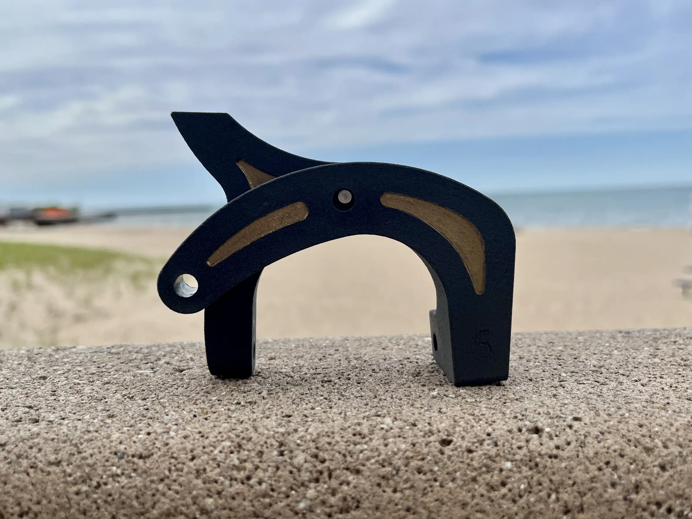

Mechanical Design & Analysis
Bike Brake Calipers
Designed and validated a bike brake caliper following ISO standards.

Overview
For MECH_ENG 240, my team and I designed a brake caliper for the back wheel on a bicycle. Our goal was to meet ISO 4210-2 braking standards while keeping the calipers as light as possible. We manufactured them in SLS Nylon 12. I was the FEA and Topology Lead, using structural analysis to guide geometry changes and check the designs before testing.
I used cable tension, pad reaction force, and rim friction to calculate the loads for FEA in Siemens NX. The initial analysis showed high stress near the inner corners of both calipers and identified the cable attachment region as an important load path. I ran topology optimization on each caliper's design space to see where material could be removed and where more support was needed. See Fig. 1 and Fig. 2 for the left and right design spaces, respectively. I used these results to reduce mass while keeping the important load paths stiff.
The initial FEA showed a combined maximum displacement of 7.62 mm, below the 11 mm limit for the cable system, as shown in Fig. 3. We printed a prototype, shown in Fig. 4, and tested it on a real bike. It stopped the bike in 16.1 m, just beyond the 15 m ISO limit. A separate force test showed that deflection was the main problem: the calipers bottomed out at 96 N, well below the 150 N target, before the full input force could reach the brake pads and rim. This limited the system's clamping force. To revise the calipers, I added material to the through-holes, turning them into recessed debosses. This created an I-beam-like cross-section and increased stiffness.
The revised design reduced maximum stress by 26% in the left caliper and 42% in the right caliper. See Fig. 5 and Fig. 6 for the FEA stress comparisons. Displacement also decreased by roughly 60%, as shown in Fig. 7 and Fig. 8. In final testing, the calipers weighed 70.9 g, withstood 160 N, and stopped the bike in 12.8 m. The updated calipers are shown installed on the bike in Fig. 9. Comparing the FEA results with the physical tests helped us identify the needed changes and verify that the revised calipers met the ISO requirement.
Gallery

Fig. 1. A topology optimization result for the left brake caliper design space.